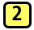

CAMBIANDO EL ESTADO DE LAS VARIABLES
TEMA 4
Hacer clic en las pestañas para continuar
(Var:)
Es una variable fija
(Exp:)
Es una expresión.
Una característica relevante de la expresión set! es el efecto de su evaluación. En primera instancia de la evaluación de la expresión set! se determina el valor de exp, por ejemplo V, y después de esto la definición de var cambia de la siguiente manera:
A partir de esta definición se puede observar el efecto, correspondiente a que todas las referencias a var en una evaluación se intercambian por V, perdiendo su valor anterior. De acuerdo a esto, la expresión set! es un operador de efecto que no retorna un valor pero permite cambiar el valor de una variable.
Haz clic sobre las pestañas verticales para observar los ejemplos.
- Ejemplo 1
- Evaluación manual
- Evaluación manual
- Begin
- Begin
- Ejemplo Set! y Begin
- Evaluación manual
- Evaluación manual
- Evaluación manual
EJEMPLO 1
Observe la definición y la expresión local que se muestra a continuación.

(local (
(define z (set! x (+ x 2))))
x)
En primer lugar, la definición establece que X es 3. Después de esto, La definición local contiene una definición para z y su cuero es x, lo que indica que en un inicio el valor de la expresión local era 3, sin embargo al contener la expresión set! el valor de x cambió. Para conocer su nuevo valor se realizara la evaluación del programa paso a paso hasta llegar al resultado final.
PASO 1
Inicialmente no se tiene en cuenta la definición local en la evaluación, por lo cual la función toma la siguiente forma:
(define z (set! x (+ x 2)))
X
PASO 2
Seguidamente se debe determinar el valor de la expresión set!: (set! X (+ x 2)), evaluando el lado derecho de esta asignación (+ x 2), a partir de lo cual x toma el valor de 5, debido a que su valor inicial es 3.
(define z (set! x 5))
X
PASO 3
Se produce el efecto de la expresión set!, el cual consiste en cambiar el valor de la variable x. A partir de esto el valor de x ya no es 3 sino 5, y esta modificación se
evidencia en la definición de x.
(define z (void))
X
...
exp-n
exp)
En la expresión begin, inicialmente se establecen los valores de las expresiones en orden y finalmente el valor de la última expresión es el valor de la expresión inicial. Básicamente la expresión begin permite ejecutar varias expresiones y retornar un valor.
VENTAJAS DE UTILIZAR BEGIN
La expresión begin simplifica las funciones.
La expresion begin propone un ordenamiento directo de la evaluación.
EJEMPLO ANTERIOR CON BEGIN
(begin (set! x (+ x 2))
x)
Esta función al implementar la expresión begin permite retornar el valor de x, el cual es en este caso 5.
EJEMPLO SET! Y BEGIN
(define x 3)
(define y 5)
(define (swap-x-y x0 y0)
(begin
(set! x y0)
(set! y x0)))
(swap-x-y x y)

EVALUACIÓN MANUAL
1. Debido a que (swap-x-y x y) es una aplicación de función, es necesario evaluar los parámetros o variables. Por lo cual reemplazamos las variables con sus valores (actuales):
(define y 5)
(define (swap-x-y x0 y0)
(begin
(set! x y0)
(set! y x0)))
(swap-x-y 3 5)
(define x 3)
(define y 5)
(define (swap-x-y x0 y0)
(begin
(set! x y0)
(set! y x0)))
(begin
(set! x 3)
(set! y 5))
3. Por último, el resultado de la evaluación es (void) porque la última expresión evaluada fue una expresión set!
(define y 3)
(define (swap-x-y x0 y0)
(begin
(set! x y0)
(set! y x0)))
(void)
Diseñar funciones con memoria requiere tres pasos importantes: